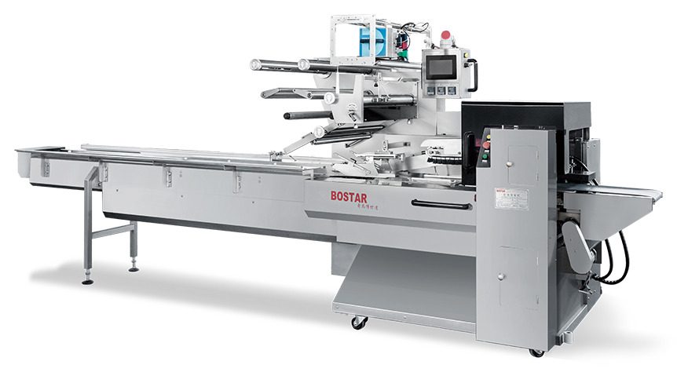

Sincerity
Good faith gathers the right people, and keeps them.
About Bostar
Qingdao Bostar Packing Machinery Co., Ltd. designs and builds horizontal packaging machinery for food, medical and household products.
Company
Our BOS series covers automatic flow wrappers, box-motion wrappers, shrink lines, frozen-food lines and automatic hamburger bun lines. We develop, machine and assemble in-house, and engineers on the team have spent 15+ years in packaging machinery.
The production base at Gaomi runs two plants. One machines the parts — four large machining centres, twelve wire-EDM machines, CNC turning and milling, and surface grinding. The other, covering 10,000 m², handles research, assembly, commissioning and shipment.
Machines are built to CE safety requirements and shipped to more than 30 markets, including Malaysia, Singapore, Thailand, Indonesia, Bangladesh, Saudi Arabia, the United States, Hungary, Africa and Central Asia.
Our approach is simple: configure the machine around the product, test it before shipment, and support it after installation.
What we stand on
Good faith gathers the right people, and keeps them.
High quality means good prospects.
Innovation is the soul of the company.
Products that satisfy the people who run them.
Export markets
Long-term relationships with customers across Asia, the Middle East, Europe, North America and Africa. Installation and training are available wherever the line is installed.


Quality process
Next step
Send your product size, film and target speed. We will come back with a machine configuration and a quote.